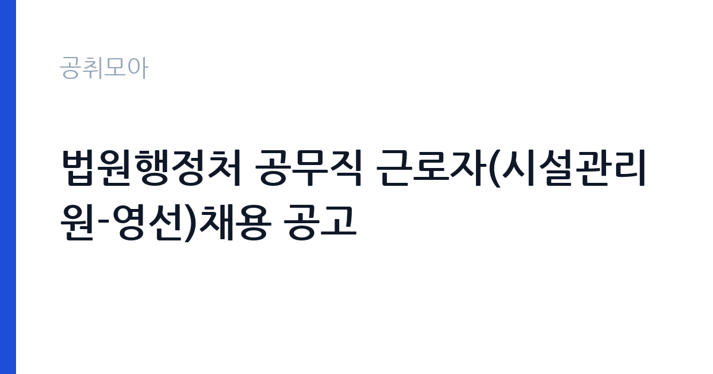

[국가기관] 법원행정처 공무직 근로자(시설관리원-영선)채용 공고
대법원 법원행정처 · 경기 · 마감 2026-10-27 (D-9) · 출처 나라일터

한눈에 보는 모집 조건
| 기관 | 대법원 법원행정처 |
|---|---|
| 공고명 | 법원행정처 공무직 근로자(시설관리원-영선)채용 공고 |
| 고용형태 | 공무직 |
| 근무지 | 경기 |
| 게시일 | 2026-10-19 |
| 마감일 | 2026-10-27 (D-9) |
지원자격, 이렇게 읽으세요
- 공무직 1명
- 접수 ~2026-10-27 마감
- 세부 조건은 원문 공고문 확인
시설관리원(영선)은 건축·설비 유지보수 실무를 담당하므로 관련 기능 자격이나 현장 경력이 평가의 중심입니다. 공고문에는 응시자격이 세부 항목으로 제시되어 있으므로, 자격증 소지 여부와 경력 연차를 한 줄씩 대조해야 합니다. 공통 요건으로 국가공무원법상 결격사유가 없어야 하고, 공무직 근로자 관리규정의 채용 결격사유에도 해당하지 않아야 합니다. 남성의 경우 병역을 마쳤거나 면제되어야 하며, 임용 즉시 근무가 가능해야 합니다. 법원 조직은 신원 확인과 보안 유지 기준이 엄격하므로 신원조회 관련 안내도 함께 확인하세요.
이 공고의 포인트
이 공고의 핵심은 공무직이라는 신분입니다. 공무직은 기간의 정함이 없는 무기계약으로, 계약 만료 걱정 없이 정년까지 근무할 수 있습니다. 근무지가 성남이라는 점도 실무자에게는 중요합니다. 수도권 남부에 거주하는 지원자는 출퇴근 부담을 크게 줄일 수 있습니다. 영선 직무는 법원 청사의 건물을 직접 관리하는 일이라, 시설관리 경력을 가진 사람에게는 안정적인 직장이 됩니다. 다만 접수 기간이 6일로 짧고 서류 준비 항목이 많으므로 일정 관리가 관건입니다.
전형은 어떻게 진행되나
전형은 서류전형과 면접전형으로 진행되는 것이 일반적이며, 최종 단계에서 신체검사와 결격사유 조회가 이어집니다. 서류에서는 응시자격 충족과 시설관리 경력을 확인하고, 면접에서는 직무 실무 지식과 근무 태도를 평가합니다. 접수는 2026년 10월 22일부터 27일까지이고, 접수 방법과 제출처는 공고문에 안내된 방식을 따라야 합니다. 담당 부서는 법원행정처 인사 담당이며, 공고문에 첨부된 응시원서와 자기소개서, 직무수행계획서 서식을 그대로 사용해야 합니다.
이런 분께 추천해요
- 건축·설비 유지보수 현장 경력이 있는 기능직 지원자
- 수도권 남부에서 무기계약직으로 안정적으로 근무하려는 분
- 법원 청사 환경에서 시설관리 실무를 이어가고 싶은 지원자
지원 전 체크리스트
- 시설관리 관련 자격증과 경력 증명을 준비했는가
- 접수 기간이 10월 22일부터 27일까지임을 확인했는가
- 응시원서·자기소개서·직무수행계획서 서식을 내려받았는가
- 공무직 결격사유와 신원 확인 요건을 확인했는가
모집 일정과 제출 타이밍
접수는 2026년 10월 22일 시작해 27일 마감됩니다. 서류전형 결과와 면접 일정은 공고문 또는 개별 통보로 안내되고, 최종합격 후 임용일은 기관 사정에 따라 정해집니다. 접수 시작일이 목요일이고 마감이 화요일이라 주말이 중간에 끼어 있습니다. 자격증 사본과 경력증명서를 주말 전에 준비해 두지 않으면 마감이 촉박해집니다. 일정은 기관 사정에 따라 변경될 수 있으므로 법원행정처 공고 페이지를 함께 확인하세요.
직무 이해하기: 국가기관
영선 직무는 청사 시설의 유지와 보수를 담당합니다. 건물의 마감재와 구조물을 점검하고, 파손된 부분의 보수 계획을 세웁니다. 도장과 목공, 철물 보수 같은 작업을 직접 하거나 외부 업체 작업을 관리합니다. 시설 점검 결과를 기록하고, 예산에 맞춰 보수 우선순위를 정합니다. 법원 청사는 재판이 진행되는 공간이라 공사 일정과 소음 통제가 까다롭습니다. 기술력만큼이나 현장 조율 능력이 필요한 직무입니다.
자기소개서 작성 팁
자기소개서는 시설관리 경력을 구체적 작업 단위로 풀어내는 것이 좋습니다. 어떤 건물의 어떤 설비를 점검하고, 어떤 고장을 어떻게 처리했는지를 사례로 쓰세요. 법원 청사라는 환경을 이해하고 있다는 점도 드러내면 좋습니다. 재판 일정과 보안 요구 때문에 공사 시간이 제한된다는 특성을 알고, 그 안에서 일정을 관리한 경험이 있다면 강한 소재입니다. 직무수행계획서에는 입사 후 첫 3개월에 무엇을 점검하고 정비하겠다는 계획을 구체적으로 적어보세요. 과장된 표현보다 안전과 정확성을 강조하는 편이 맞습니다.
면접 준비 포인트
면접에서는 시설 유지보수의 기본 원칙과 안전 수칙을 확인합니다. 전기·소방·건축 설비의 점검 주기, 하자 처리 절차, 외부 업체 관리 방식 같은 실무 질문이 나올 수 있습니다. 긴급 보수 요청이 여러 건 겹칠 때 우선순위를 어떻게 정할지도 준비하세요. 공무직으로서 장기 근무 의지와 조직 적응력도 평가 대상입니다. 답변은 작업 순서를 차분히 설명하는 방식이 가장 신뢰를 줍니다.
급여·근무조건 읽는 법
법원행정처 공무직의 보수는 기간제 및 공무직 근로자 관리규정과 기관의 보수 기준에 따라 지급됩니다. 이 공고문에는 금액이 요약되어 있지 않으므로, 정확한 초임과 수당 체계는 원문 공고문의 보수 항목으로 확인해야 합니다. 공무직은 기간의 정함이 없는 계약으로 정년이 정해져 있고, 4대보험과 퇴직급여, 각종 수당이 규정에 따라 적용됩니다. 초임은 경력과 직무 등급에 따라 달라지며, 경력 인정 범위는 채용 담당 부서에 문의해 확인하는 편이 정확합니다.
자주 묻는 질문
- 공무직은 계약직인가요
공무직은 기간의 정함이 없는 무기계약 근로자입니다. 계약직과 달리 계약 만료로 인한 고용 종료가 없고 정년이 적용됩니다. - 경력이 없어도 지원할 수 있나요
응시자격에 자격증 또는 경력 요건이 제시되어 있습니다. 세부 기준은 원문 공고문의 응시자격 항목에서 확인해야 합니다. - 근무지는 어디인가요
이 공고의 근무지역은 경기도 성남시입니다. 구체적 근무 청사는 공고문과 채용 담당 부서 안내로 확인하세요.
함께 보면 좋은 공고
[국가기관] 「충남대학교 AI인재양성부트캠프사업단」 전담직원(팀원) 공개 채용 공고 — 마감 2026-10-25[국가기관] 충남대학교 브랜드 단과대학 사업 연구교수 공개채용 공고 — 마감 2026-10-26[국가기관] 충남대학교 브랜드 단과대학 사업 기간제계약직(행정원) 공개채용 공고 — 마감 2026-10-26출처: 나라일터 공개정보를 바탕으로 공취모아가 정리한 안내글입니다. 모집 조건·일정은 변경될 수 있으니 지원 전 반드시 원문 공고문을 확인하세요. 본 글은 정보 제공용이며 합격을 보장하지 않습니다.